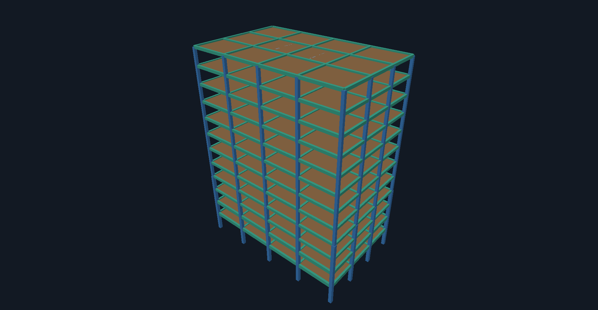

{{icon:panel-left}}
{{icon:layers}}
Explorer
672{{icon:panel-left:sm}}{{icon:search:sm}}Filter by name or section
Stories
{{icon:chevron-down:sm}}L1256
{{icon:chevron-right:sm}}L1156
{{icon:chevron-right:sm}}L1056
{{icon:chevron-right:sm}}L956
{{icon:chevron-right:sm}}L856
{{icon:chevron-right:sm}}L7 … L17 more
Types
Columns240
Beams372
Floors12
Walls48
Source units kip · ft · °F. Lengths shown in m, converted at 0.3048 m/ft.
F
Floor shell · L12 · main/v2
Approximate
Flat ring · body not drawn
Insertion point not represented. The source declares TOP. Which side of the ring the body occupies is not certified, so TALOS draws the flat face only and the backend tier is Approximate.
Section
SectionS8 · Slab
MaterialC
Thickness0.2286 m (0.75 ft)
InsertionTOP
Display
Native displayFlat ring only: a TOP/BOTTOM face; body thickness omitted (side unproven)
Backend fidelityApproximate [ShellInsertionPointIgnored]
Source
Source keyinst|sh|F|L12 {{icon:copy:sm}}
59 exact
612 resolved
1 approximate
0 withheld
{{icon:scan}}
{{icon:box}}
{{icon:rotate-3d}}
{{icon:move}}
{{icon:zoom-in}}
{{icon:layers}}
{{icon:eye}}
{{icon:square-dashed}}
{{icon:git-commit-horizontal:sm}} main2 synthetic snapshots
v1Roof slab MIDDLE · podium beams 2.5 ft
v2 · viewingRoof slab TOP · podium beams 3 ft
Synthetic snapshots: no commit history, dates or analysis runs.